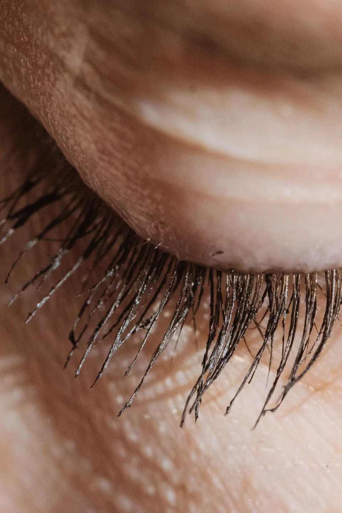

Подготовка
Уточните у мастера правила подготовки именно к выбранной процедуре.
СТУДИЯ РЕСНИЦ И БРОВЕЙ
Ресницы и брови в Одинцово
Наращивание и ламинирование ресниц, оформление бровей и перманентный макияж. Позвоните, чтобы обсудить процедуру и время визита.

Lash Time / О ПОДХОДЕ
Естественный эффект или заметный акцент? Расскажите мастеру о привычном макияже, предыдущих процедурах и о том, какой результат вам нравится.
ВЫБРАТЬ НАПРАВЛЕНИЕ
Выберите то, что ближе к вашей задаче.
Обсудите форму, длину и желаемую выразительность. Примеры помогут мастеру понять ваши ожидания.
Составить обращение ↗ПАМЯТКА
Уточните у мастера правила подготовки именно к выбранной процедуре.
Обсудите желаемый эффект и ограничения до начала работы.
Попросите рекомендации и сроки следующего обращения у своего мастера.
ПОЛЕЗНО ПЕРЕД ОБРАЩЕНИЕМ
Примеры нужны для обсуждения эффекта. Результат зависит от индивидуальных особенностей — согласуйте ожидания с мастером.
Подготовить запрос ↗ВАШ СЛЕДУЮЩИЙ ШАГ
Несколько деталей помогут точнее обсудить задачу. Полученный текст можно скопировать для сообщения или использовать при звонке.
ТЕКСТ НЕ ОТПРАВЛЯЕТСЯ АВТОМАТИЧЕСКИ
ПЕРЕД ВИЗИТОМ
Опишите желаемый эффект и особенности предыдущего опыта. Мастер поможет определить подходящий вариант.
Позвоните в студию: актуальное расписание необходимо уточнять у администратора.
Правила подготовки зависят от процедуры. Уточните их у мастера при записи.
КОНТАКТЫ
Часы работы и детали визита уточните перед обращением.